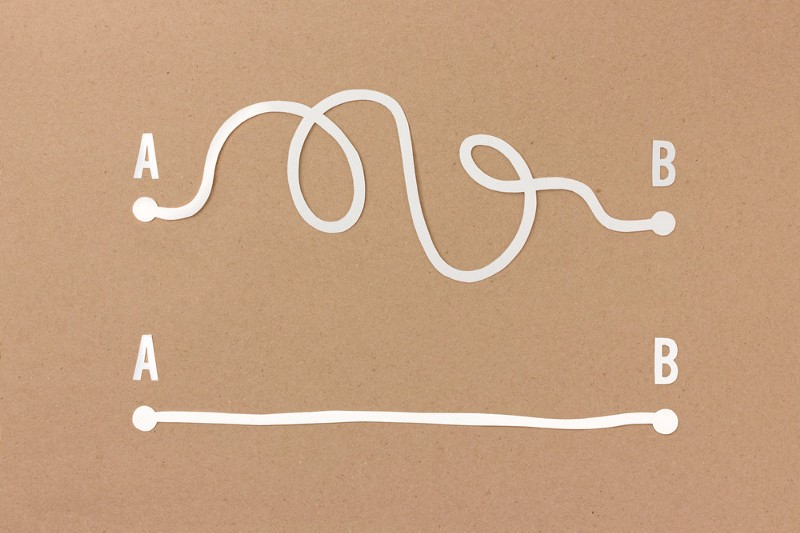

Coding Best Practices
Thu 5 Dec 2019
When you're working on a project, it's best to keep these practices in mind on your coding implementations:
- 1. Use consistent indentation
- -There is no right or wrong indentation that everyone should follow. The best style, is a consistent style. Once you start competing in large projects you’ll immediately understand the importance of consistent code styling. Example: Indent everytime you create a new construct (Conditional statements, Loops, etc.).
- 2. Follow the DRY Principle
- -DRY stands for “Don’t Repeat Yourself.
-The same piece of code should not be repeated over and over again. - 3. Avoid Deep Nesting
- -Too many levels of nesting can make code harder to read and follow.
- 4. Limit Line Length
- -Long lines are hard to read. It is a good practice to avoid writing horizontally long lines of code.
- 5. File and Folder Structure
- -You should avoid writing all of your code in one of 1-2 files. That won’t break your app but it would be a nightmare to read, debug and maintain your application later.
-Keeping a clean folder structure will make the code a lot more readable and maintainable. - 6. Naming Conventions
- -Use of proper and meaningful naming conventions is a well known best practice. It's a very common issue where developers use variables like X1, Y1 and forget to replace them with meaningful ones, causing confusion and making the code less readable.
- 7. Keep the Code Simple
- -The code should always be simple. Complicated logic for achieving simple tasks is something you want to avoid as the logic one programmer implemented a requirement may not make perfect sense to another. So, always keep the code as simple as possible.
- 
- 8. Comments
- -It's important to put comments on parts of your code explaining what it does. It's useful for other people who will view or use your code. Comments breaking apart sections/parts. It also helps you keep track of your code and make it more maintanable. Just remember not to write comments for every line of code and every variable declared, just wherever it's required.

Credit: TopCoder